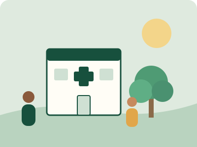

Symptom checkCompleted
City Clinic1.2 km away · Open now
Safety-first guidance. Urgent signs are flagged right away.
OpenHospitals, clinics, pharmacies and labs on Google Maps.
OpenPick a date and time, then add it to your calendar.
OpenSee what common tests check and how to prepare.
OpenSix daily habits and a progress ring that keeps you going.
OpenAsk a health-only AI about symptoms, sleep, stress and nutrition.
Open0Symptoms covered
0Conditions checked
0Languages
0Hours a day, AI help
How it works
1
Tell us how you feel
Pick symptoms from a searchable list or describe them in your own words.
2
Get possible causes
See likely conditions, how urgent they are and what you can do right now.
3
Take the next step
Find care nearby, book a checkup or ask the health AI more questions.
Helpful guidance, not a diagnosis. MEDUTECH cannot diagnose, prescribe or handle emergencies. In an emergency call 112.
See all features